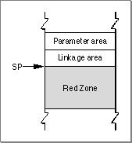

The Red Zone
The space beneath the stack pointer, where a new stack frame would normally be allocated, is called the Red Zone. This area, as shown in Figure 4-3, may be used for any purpose as long as a new stack frame does not need to be added to the stack.
For example, the Red Zone may be used by a leaf procedure. A leaf procedure is a routine that does not call any other routines. Since it does not call any other routines, it does not need to allocate a parameter area on the stack. Furthermore, if it does not need to use the stack to store local variables, it need save and restore only the nonvolatile registers that it uses for local variables. Since by definition no more than one leaf procedure is active at any time, there is no possibility of multiple leaf procedures competing for the same Red Zone space.
A leaf procedure does not allocate a stack frame nor does it decrement the stack pointer. Instead it stores the Link Register and Condition Register values in the linkage area of the routine that calls it (if necessary) and stores the values of any nonvolatile registers it uses in the Red Zone. This streamlining means that a leaf procedure's prolog and epilog do only minimal work; they do not have to set up and take down a stack frame.
When an exception handler is called, the Exception Manager automatically decrements the stack pointer by 224 bytes (the largest possible area used to save registers), to skip over any possible Red Zone information, and then restores the stack pointer when the handler exits. The Exception Manager does this because an exception handler cannot know in advance if a leaf procedure is executing at the time the exception occurs. If you are writing code that modifies the stack at interrupt time, you must similarly decrement the stack pointer by 224 bytes to preserve any Red Zone information and restore it after the interrupt call.
- Note
- The value of 224 bytes is the space occupied by nineteen 32-bit general-purpose registers plus eighteen 64-bit floating-point registers, rounded up to the nearest 16-byte boundary. If a leaf procedure's Red Zone usage would exceed 224 bytes, then it must set up a stack frame just like routines that call other routines.